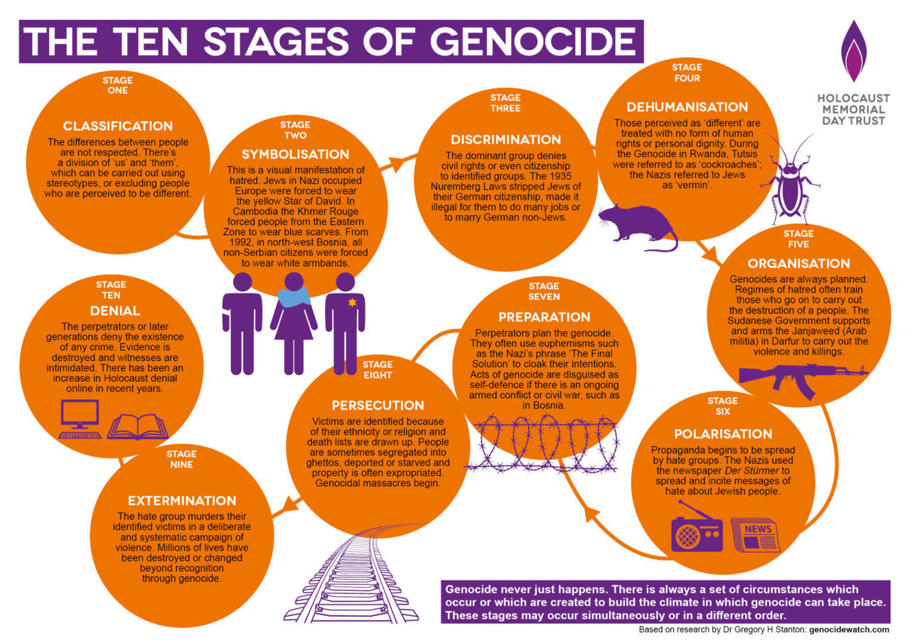
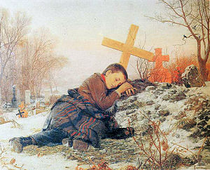
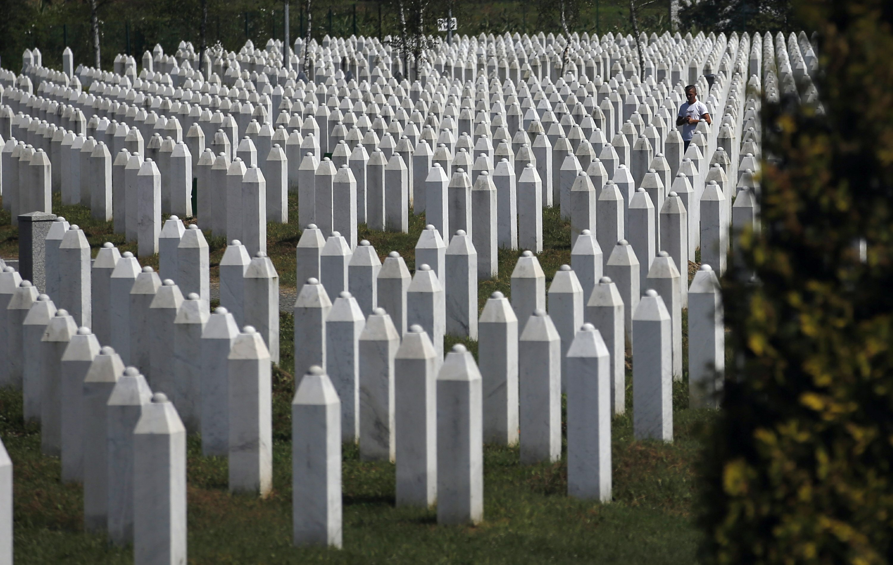

How Does it fit with the UN's definition of Genocide?
-An Image of the ten stages of Genocide
When Slobodan Milosevic came to power, he wanted to eliminate all other religions except orthodox christianity. He organized the military troops of Serbia to control 677 concentration camps and centres and prevent aid from various organizations from reaching the persecuted “non-Serbs." This was a way of “deliberately inflicting on the group conditions of life calculated to bring about its physical destruction in whole or in part”, as defined by the UNGC as a component of genocide. In preparation for this ethnic cleansing, the Serb ministry of defence entered into a secret arms deal with Israel to supply rifles and missiles.
Symbolization
-An Image of a boy crying, that was often used for proganda in the Yugoslavian Wars.
This Bosnian genocide conforms to the stages of genocide and the UNGC definition. The classification stage of genocide occurs when different groups are created based on culture, race, religion, or nationality and these groups are categorized into “us" or “them.” In Bosnia, there were three groups that were categorized by their religious beliefs; orthodox christians, sunni muslims and roman catholic christians. When the leader Slobodan Milosevic came to power, he wanted orthodox christianity to be the only religion practised by all Bosnians. Sunni muslims were called Bosniaks and roman catholic christians were called Bosnian Croats but both were considered “non-Serbs.” They were viewed as outsiders who were destroying the country. This corresponds to the stage of genocide called symbolization where names or symbols are given to differentiate and classify a group.
In order to gain control, the Serbians used propaganda to separate groups which is the stage of polarization. Serbs used the media to promote their efforts to protect the Serbs and to cause disruption between groups by displaying images of “non-Serbs” killing and torturing Serbs.
Persuction
The stage of persecution is where victims, because of their ethnicity or religion, are identified and isolated from the rest. An order was put in place by the Bosnian Serbian authorities forcing all “non-Serbs” to identify their houses with white flags or sheets. Outside the house, the “non-Serbs" had to wear a white armband.
Descrimination and Dehumanization
As part of the discrimination stage of genocide, non-Serbs were not allowed to hold public office and could not be part of the army unless they took a pledge of loyalty to the Serbian’s. Serbs also regarded "non-Serbs" as lesser humans which corresponds to the dehumanization stage of genocide. “Non-Serbs” were not accepted and viewed as a threat to the nation. “Non-Serbs” were treated as animals, put into cages and killed without hesitation.
Extermination
-Graves of victims that were killed during the genocide. About 100,000 died during the Bosnian Genocide..
“Killing members of the group” corresponds to another condition of genocide and ties into the extermination stage. In Bosnia, men were forced into concentration camps, while women and children were raped and beaten by Serbian soldiers. The separation of the men from the women was part of the “imposing measures intended to prevent births within the group.” They also created rape camps in order to reduce and eventually eliminate the Muslim and Croat blood line. Men in concentration camps were denied fundamental necessities and both the men and women were abused. This is a component of “causing serious bodily or mental harm to members of the same group.”
Denial
The last stage of genocide is denial and this was demonstrated by the numerous efforts to cover up the mass graves created during the Bosnian Genocide and the denial of the ethnic cleansing by the Bosnian leader. Slobodan Milosevic never admitted that his desire to have a Serbian nation resulted in genocide. He continued to plead not guilty to genocide and crimes against humanity even after he was charged.